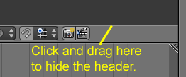
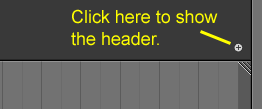

Regions¶
An Editor is subdivided into regions.
Main Region¶
At least one region is always visible. It is called the main region and is the most prominent part of the editor.
Each editor has a specific purpose, so the main region and the availability of additional regions are different between editors. See specific documentation about each editor in the Editors chapter.
Header¶
A header is a small horizontal strip with a lighter gray background, which sits either at the top or bottom of the area. All editors have a header acting as a container for menus and commonly used tools. Menus and buttons will change with the editor type and the selected object and mode.

The Header of the 3D View editor.
If you move the mouse over an area,
the header of its editor changes to a slightly lighter shade of gray.
This means that it is “focused”.
All hotkeys you press will now affect the contents of this editor.
The header can be hidden with Alt-F9.
Tool Shelf¶
The Tool Shelf by default on the left side contains the tool settings.
T toggles the visibility of Tool Shelf Region.
Operator Panel¶
The Operator panel is a region that is part of the Tool Shelf containing only one panel. In the 3D View it displays the properties of the last operator executed and in the File Browser the file import/export options.
Properties Region¶
The Properties Region is by default on the right side.
It contains Panels
with settings of objects within the editor and the editor itself.
N toggles the visibility of Properties Region.
Arranging¶
Scrolling¶
A region can be scrolled vertically and/or horizontally by dragging it with the MMB.
If the region has no zoom level, it can be scrolled by using the Wheel,
while the mouse hovers over it.
Changing the Size and Hiding¶
Resizing regions works the same way as Areas by dragging its border.
To hide a region scale it down to nothing.
A hidden region leaves a little plus sign (see picture).
By LMB on this, the region will reappear.
The Tool Shelf and Properties region have a shortcut assigned to toggle between hide and show.

|

|
Position¶
To flip a region from one side to the opposite press F5,
while the Region is under the mouse pointer.
The header can also be flip by RMB on it and
select the appropriate item from the pop-up menu.
If the header is at the top, the item text will read “Flip to Bottom”,
and if the header is at the bottom the item text will read “Flip to Top”.